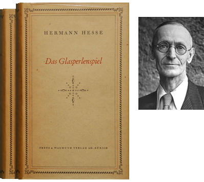

![[Logo]](images/logosm.png) Perlenspiel3
Perlenspiel3Welcome to Perlenspiel
Perlenspiel is a gameclavier, a software instrument for studying and composing digital games.
It was created in 2009 by Brian Moriarty for his game design students in the Interactive Media and Game Development program at Worcester Polytechnic Institute. His keynote lecture at the Educational Summit of the 2012 Game Developers Conference describes the genesis of the project.

Perlenspiel’s austere design was inspired by Herman Hesse’s 1943 novel Das Glasperlenspiel (The Glass Bead Game). It challenges designers to work in a raster of jumbo-sized pixels or “beads” no larger than 32 x 32, the dimensions of a standard Windows icon.
The Perlenspiel gameclavier is open source. Everything needed to use it is on this Web site.
Experiment. Explore. Make curious little toys, gizmos and games. Experience the primitive joy of ultra-low-res graphics.
The web site for Perlenspiel 2 is still available here. Games written for it will continue to run without any changes.